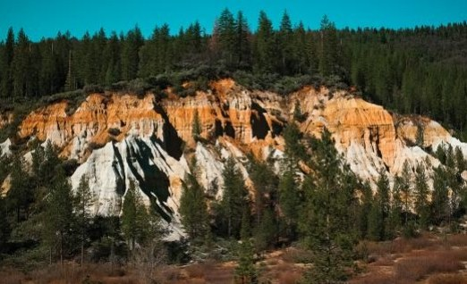
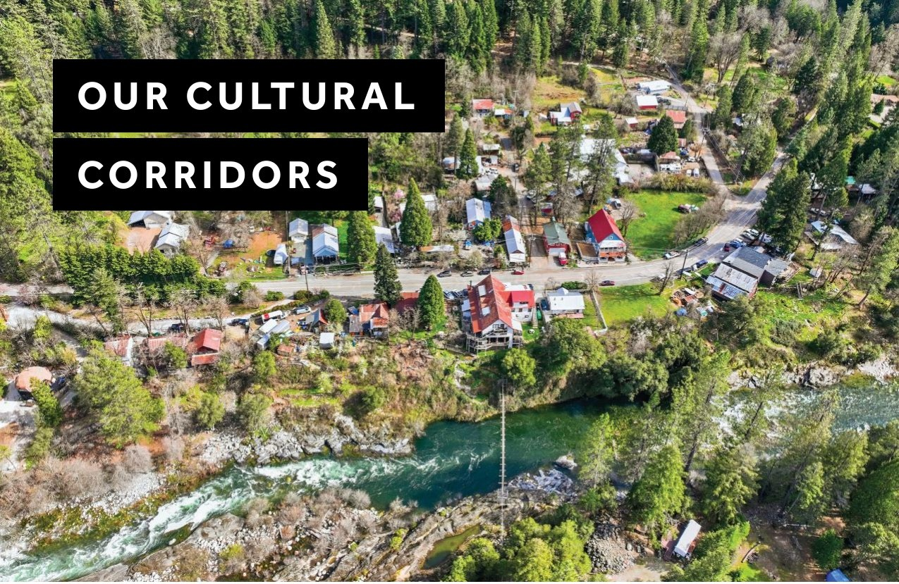
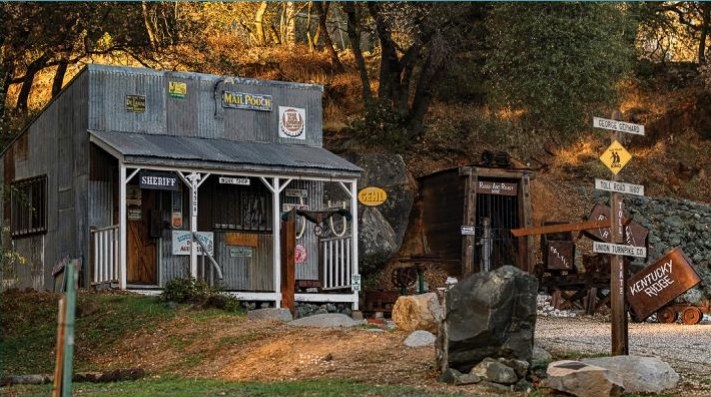
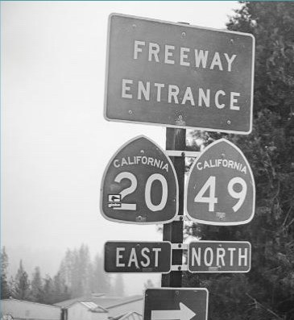
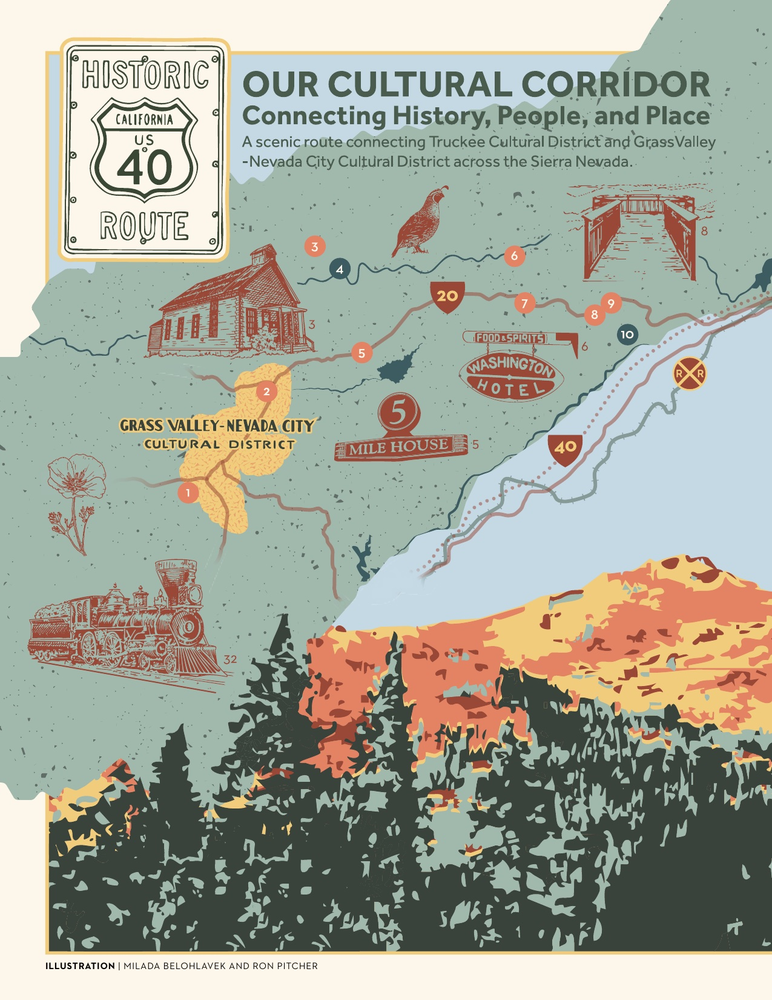
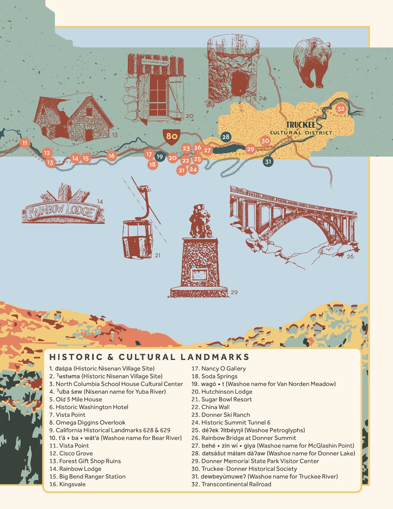

Connecting history, people, and place along scenic routes
In the heart of the Sierra Nevada, Nevada County’s highways are more than just roads—they are cultural corridors. These routes weave together stories of California’s First Peoples, Gold Rush miners, artists, and dreamers who shaped the region’s history. Highways 49, 20, and 40—each with its own distinct heritage—form a network that connects the county’s vibrant California Cultural Districts and historic landmarks, while offering breathtaking views of rolling foothills, towering pines, and High Sierra vistas.
Words / Jesse Locks · MUSE ’26 | Issue 03
Highway 49
Running north to south through Nevada County, Highway 49—named for the “49ers” who rushed into California’s goldfields looking for their fortunes in 1894—is famously known as the Golden Chain Highway, linking the historic Gold Rush towns that once defined California’s economy.
Today, travelers along Highway 49 can explore Empire Mine State Historic Park in Grass Valley—one of the oldest, deepest, and richest gold mines in California. The beautifully preserved mine buildings, cottages, and gardens recall the opulence of the mining boom and the lives of those who built their futures here.
Further north, the rugged beauty of the San Juan Ridge unfolds in towns like North San Juan and the preserved ghost town of North Bloomfield at Malakoff Diggins State Historic Park. On Tyler Foote Road, on the San Juan Ridge, stands the North Columbia Schoolhouse Cultural Center, a beautifully restored 1875 schoolhouse that remains the creative heart of its rural community. Built by miners for their children, the Schoolhouse now hosts artists, film screenings, poetry readings, craft fairs, weddings, and, of course, the internationally renowned Sierra Storytelling Festival.



Highway 20
Stretching east to west across Nevada County, Highway 20 traces its roots to the 19th-century California Trail, used by emigrants in wagons seeking new lives in California. What began as a rugged pioneer road evolved into one of the state’s most scenic drives, officially designated State Route 20 in 1934. The eastern stretch, from Bear Valley to Nevada City, follows the old Truckee Route of the California Trail—later transformed into a turnpike that linked the mining camps with emerging farming towns.
Just off Highway 20, the Little Town of Washington offers a glimpse into Nevada County’s colorful past, the latter flanking the South Yuba River. Here, the historic Washington Hotel, built in 1857, continues to serve as the community hub, hosting fundraisers for the local fire department, and acting as the rallying point for the town’s Fourth of July Parade.
Further south is Rough and Ready, founded in 1849. The town proudly recalls its less than three-month rebellion as the Great Republic of Rough and Ready each June during Secession Days. The town’s mining heritage lives on in its street names—Ironclad, Gamble Court, and the unforgettable To Hell and Back Lane.
Highway 40
Before Interstate 80 sped travelers through the Sierra, there was “Old Highway 40”—part of America’s first transcontinental road, the legendary Lincoln Highway, which stretched from Times Square in New York City to Lincoln Park in San Francisco. Here, every curve tells a story. Ancient petroglyphs near Donner Summit, etched into granite thousands of years ago by the ancestors of today’s Washoe People—a culture known as the Martis People—offer a glimpse into the lives of the region’s earliest inhabitants. Stop at Van Norden Meadow, where the South Fork of the Yuba River begins its journey through canyons and forests, down into the foothills below. The river is a serene reminder of the natural forces that have shaped this land for millennia.
Nearby, Clair Tappaan Lodge, built in the 1930s by Sierra Club volunteers, continues to welcome adventurers and families drawn with its rustic charm. Further along Old 40, Rainbow Lodge, a 1920s retreat crafted from native stone and timber, recalls the golden age of alpine travel. And from Donner Lake to Cisco Grove, visitors can experience this rich history along the “20 Mile Museum,” through a series of interpretive signs that tell the evolving story of migration, innovation, and the spirit of the Sierra.



MUSE ’26 · Pages 12–13
“Our Cultural Corridor — Connecting History, People, and Place. A scenic route connecting Truckee Cultural District and Grass Valley–Nevada City Cultural District across the Sierra Nevada.”
Illustration | Milada Belohlavek and Ron Pitcher
“ Blending Gold Rush history with a vibrant arts community, the cultural corridors that connect the Town of Truckee with Grass Valley, Nevada City, and beyond are reminders of how our past and present connect along every mile. Our Cultural Corridors · words by Jesse Locks · MUSE ’26
From MUSE ’26 · Our Cultural Corridors
Every place named in this story — Empire Mine, the Washington Hotel, Malakoff Diggins, the North Columbia Schoolhouse, Clair Tappaan Lodge — is on the Cultural Map.
Open the Cultural Map
A project of the Nevada County Arts Council.
Want to add a place? Contribute to the map →